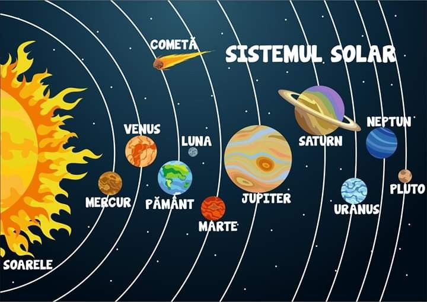

Sistemul solar este o grupare de corpuri cerești care orbitează în jurul unei stele centrale
precum Soarele. Acesta include 8 planete: Mercur, Venus, Pământ, Marte, Jupiter, Saturn, Uranus
și Neptun. Ele își mențin orbita în jurul Soarelui datorită gravitației acestuia.
Soarele este o stea uriașă, alcătuită, preponderent, din substanțe chimice ușoare, cum sunt
hidrogenul (H2) și heliul (He). Reacțiile ce au loc atât la suprafața acestuia, cât
și în interiorul lui, reprezintă surse de energie termică și de lumină.
Cele 8 planete sunt împărțite în 2 categorii: planete de tip terestru și gigantice, despărțite
de centura asteroizilor. Primele 4 sunt: Mercur, Venus, Pământ și Marte, iar din categoria celor
mari fac parte: Jupiter, Saturn, Uranus și Neptun.
Pe lângă planete, sistemul solar conține și sateliți naturali, asteroizi și comete. Luna este
satelitul natural al Pământului și influențează mareele. Centura de asteroizi se află între
Marte și Jupiter, iar Marte este numită și Planeta Roșie, datorită culorii sale.
Sistemul Solar face parte din galaxia Calea Lactee, fiind format cu peste miliarde de ani în urmă.
Nicolaus Copernicus a fost primul astronom care a dezvoltat ideea unui sistem heliocentric, din care
succesorii lui au putut să-i descopere proprietățile unice a acestui sistem planetar.

| Rază | Volum | Masă | Densitate medie | Temperatură |
|---|---|---|---|---|
| 695.700 km | 1,41*1018 km3 | 1,9884*1030kg | 1,408 g/cm3 | Nucleu: 15.099.7260C |
| Fotosferă: 5.498.850C | ||||
| Coroană: 5.0000C |